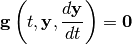

Differential equations are frequently encountered in a variety of technical fields. For example, scientists and engineers often express mathematical models of physical phenomena as a set of differential (and possibly some algebraic) equations. These models can quickly become complicated enough that direct analytical solutions are difficult or impossible to obtain. In these cases, computers can be used to numerically generate approximate solutions.
A system of differential algebraic equations (DAEs for short) is a set of
equations that implicitly relate an independent variable  , a set of
dependent variables , and the set of first derivatives
, a set of
dependent variables , and the set of first derivatives
 . (Throughout this documentation, we use boldface to
indicate a vector quantity.) The general form is
. (Throughout this documentation, we use boldface to
indicate a vector quantity.) The general form is

Most DAE systems can be expressed in the above form using the appropriate transformations (e.g. finite differencing).
In 1982 the first version of DASSL, a Fortran code for efficient solving of DAE systems of the above form, was released by Petzold [Petzold1982]. In 1989 and 2002 the first versions of DASPK and DASKR, descendants of the DASSL code with a number of advanced features, were released by Brown, Hindmarsh, Petzold, and Ulrich.
| [Petzold1982] | L. R. Petzold. “A Description of DASSL: A Differential/Algebraic System Solver.” Sandia National Laboratories report SAND82-8637 (1982). |
DASSL, DASPK, and DASKR are written in Fortran 77, which is not much fun to code in, especially for novice programmers. Even after the vast improvements in the language in Fortran 90/95, the task can seem daunting. (In particular, getting data into and out of a Fortran program via file input and output is still quite difficult and awkward.) However, the strength of Fortran is that it produces code that is very efficient to execute, which is often important when solving DAEs.
Meanwhile, the Python programming language is much easier to program in. In particular, Python comes with a large library of free, open source packages that provide a wide range of functionality, limiting the amount of work the programmer needs to do from scratch. A number of packages, including NumPy, SciPy, and matplotlib, replace much of the functionality of numerical computing environments such as MATLAB. However, the differential equation functionality within SciPy is insufficient for many complex DAE systems.
PyDAS provides Python programmers with access to a much more robust DAE solver by providing an interface to the DASSL code from Python.
If you have a small set of differential equations, you should consider trying the differential equation solver contained within SciPy first, as it may be suitable for your task. However, if you have a large set of differential (and algebraic) equations and/or know that you need a more robust solver, then PyDAS may be just the tool for you.
Read on to learn how to install and use PyDAS, and tips for getting the most out of PyDAS.